Warum Winter Silence
Weihnachten war einmal die Zeit, leiser zu werden. Heute ist sie oft das Gegenteil — Einkaufsstress, Termine, Erwartungen. Yoga erinnert uns zurück an das, was wirklich zählt. Und wenn eine Klangschale angeschlagen wird, bewegt sich diese Schwingung durch uns hindurch: löst, was verspannt ist, öffnet, was eng geworden ist.Vier Tage, um innezuhalten — bevor das neue Jahr beginnt
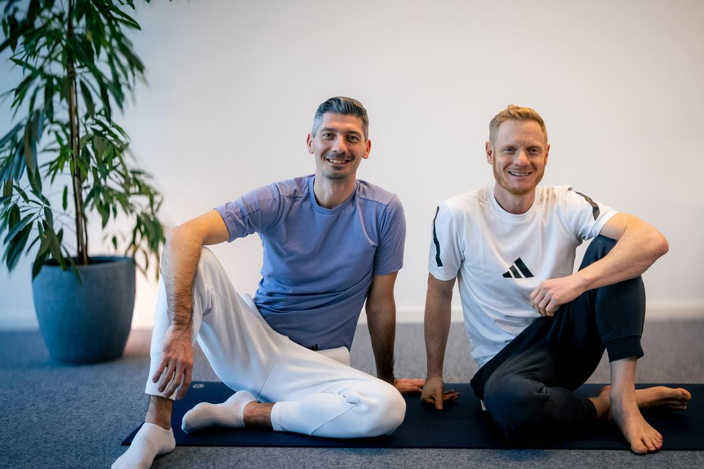
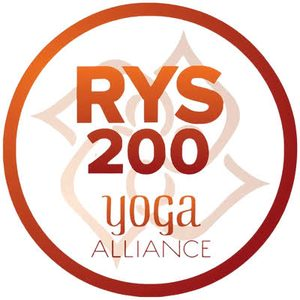
Eure Lehrer
Chris & Vlad begleiten euch persönlich durch alle vier Tage
Still & Strong Yoga steht für zugängliches Yoga ohne Vorkenntnisse — für Einsteiger, für Männer und für alle, die eine bewusste Auszeit suchen.
Christian
The Harmony Maker- Yoga-Praxis seit 2015
- 200h Yoga Teacher Training, Yoga Vidya School, Rishikesh (2023)
- Sound Healing (Indien, 2023) & Advanced Sound Healing, Himalayan Yoga Nepal
- Iyengar Hatha Yoga Training, Goa (2024)
- Schwerpunkte: Hatha, Vinyasa, Pranayama/Breathwork, Ashtanga
- Signature: 1:1- & Gruppen-Sound-Healing mit tibetischen Klangschalen & Gongs
- In Mondsee aufgewachsen — die persönliche Verbindung zu diesem Ort
Vladimir
The Stereotype Breaker- Yoga-Praxis seit 2014, entdeckt über einen „Yoga for Men"-Kurs bei adidas
- 200h Multi-Style Teacher Training, Trimurti Yoga, Goa (2019)
- 800h International Yoga Therapy Certification, Yoga Therapy Greece (2025)
- Yin Yoga Training, Kranti Yoga, Goa (2024)
- Schwerpunkte: Vinyasa, Hatha, Yin Yoga, Yoga Therapy
- Bekannt für „Yoga for the Inflexibles" & „Yoga for Men"
- Mission: Yoga-Klischees aufbrechen — besonders für Männer und „Unflexible"
Ablauf
Wie läuft ein Tag beim Winter Silence Retreat ab?
Jeder Tag kombiniert eine aktive Morgen-Yoga-Einheit, eine ruhige Abend-Praxis mit Sound Healing und ausreichend freie Zeit für Spa, Weihnachtsmarkt oder einfach Nichtstun. Der komplette Ablauf aller vier Tage im Überblick:
1:1- oder Paar-Sound-Healing kostet +50 € zusätzlich und wird nach Anmeldung vor Ort vereinbart. Das Mystery Event am Freitagabend ist kostenlos inklusive.
Mehr zu Yoga-Stilen & Sound HealingStimmen von unseren Retreats
Wie bewerten frühere Gäste das Retreat?
80 % unserer Gäste kommen zu einem weiteren Retreat zurück — Winter Silence ist bereits unser 5. Retreat insgesamt und das 3. Winter-Retreat in Mondsee. Hier einige Original-Stimmen, so wie sie uns erreicht haben:
„The variety and amount of yoga, I specifically liked the sound healing & the visual effects of the Moon-screening :)"
Andrea, Hungary„The organization (Vlad and Chris, you both took really good care of us), the location, and the classes (their diversity and the perfect sequence)"
Lisa, Russia„The selection of calmer yoga styles was really appealing to me. The sound healing was a revelation. The hotel and the food were excellent. The quality and the service were delightful."
Lynn, Germany„The quality of yoga classes, a lot of explanations on correct moves, breath, where the tension should be, etc. — three levels for asanas for any level (light, medium, more complicated) — this was great!"
Maria, Russia„The whole trip and experience was amazing — if I need to pick, then Restorative Yoga & Sound Bath session, location, hotel, mystery excursion. Thank you both :)"
Sakshi, India„The winter yoga retreat at Mondsee was magical. I went together with a friend, but didn't know anyone else. I can't describe the fun and warmth I found in this small group of very different people. What seemed to unite us was the sense of trust in Vlad and Chris."
Sheila, UKZimmer & Preise
Was kostet das Winter Silence Retreat?
Die Preise liegen zwischen 645 € und 850 € pro Person und beinhalten 3 Nächte, alle Yoga- und Sound-Healing-Einheiten sowie Vollverpflegung. Alle Preise sind Early-Bird-Preise, gültig bei rechtzeitiger Anmeldung.
Euer eigener Rückzugsort für vier Tage — ruhig, komfortabel, ganz für euch allein.
Zimmerfoto ansehenGemeinsam reisen, gemeinsam zur Ruhe kommen — Preis pro Person bei Doppelbelegung.
Zimmerfoto ansehenDie gehobene Kategorie mit mehr Raum und Ausstattung im historischen Schloss Hotel.
Zimmerfoto ansehenIm Preis enthalten
- 3 Nächtigungen im Schloss Hotel Mondsee
- Alle Yoga- & Sound-Healing-Einheiten laut Programm
- Großes Frühstücksbuffet
- 3-Gänge-Abendessen
- Wasser am Tisch
Stornobedingungen
Eine kostenfreie Stornierung ist bis 7 Tage vor dem Anreisedatum möglich.
Im Falle einer Spätstornierung oder Nichtanreise berechnen wir 90 % pro Zimmer und Nacht.
Location & Erlebnis
Wo findet das Retreat statt?
Im Schloss Hotel Mondsee im Salzkammergut, Österreich — nur rund 4 Autostunden von Nürnberg und Südbayern entfernt. Historische Mauern treffen auf modernes 4★S-Niveau, Spa, Sauna und das Gourmet-Restaurant Culinaro.
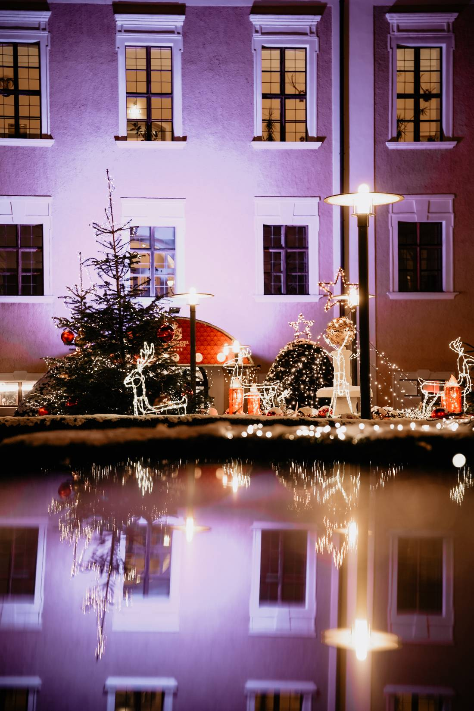
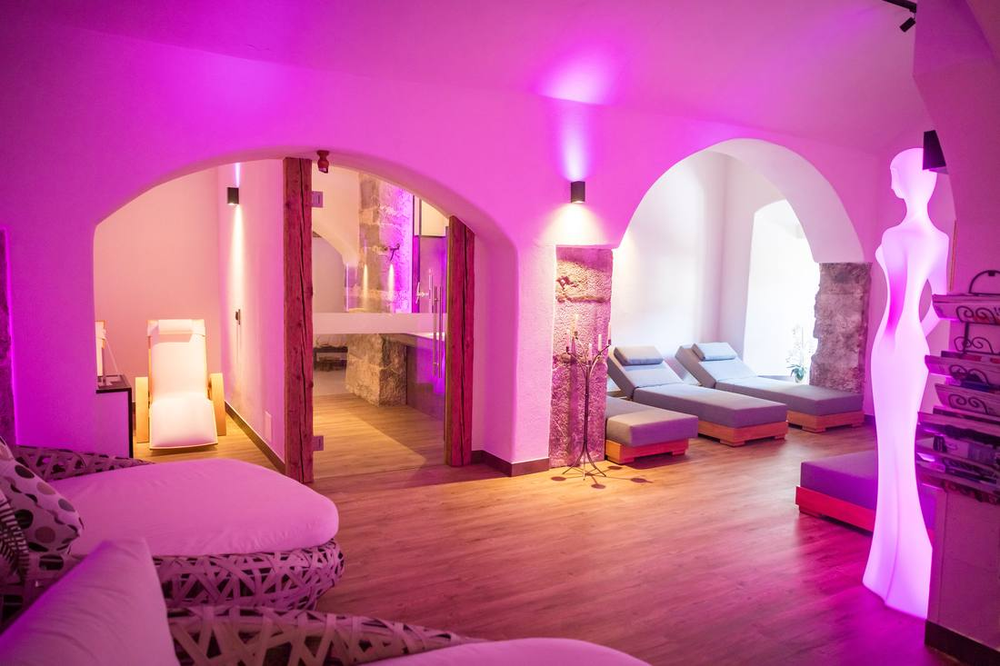
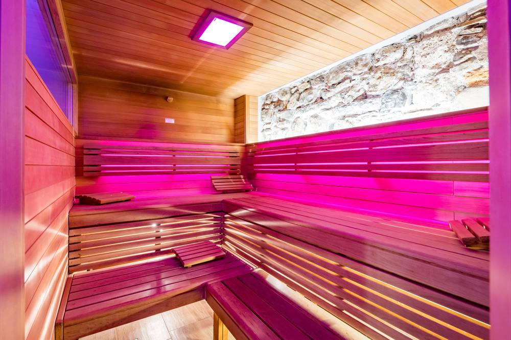
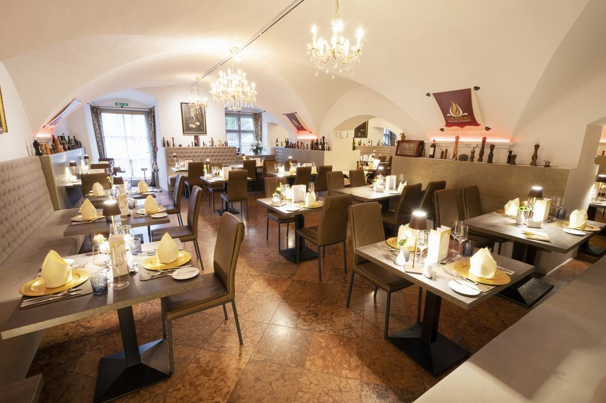
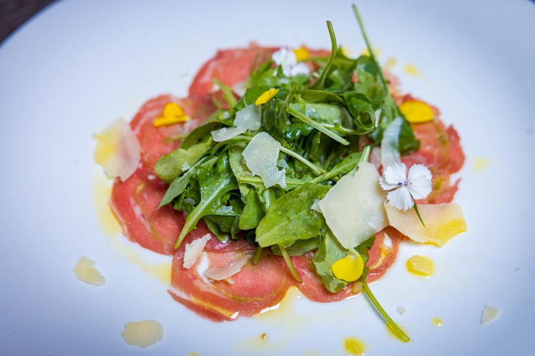
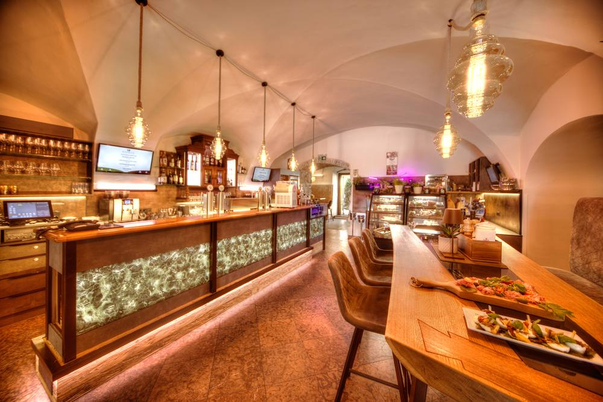
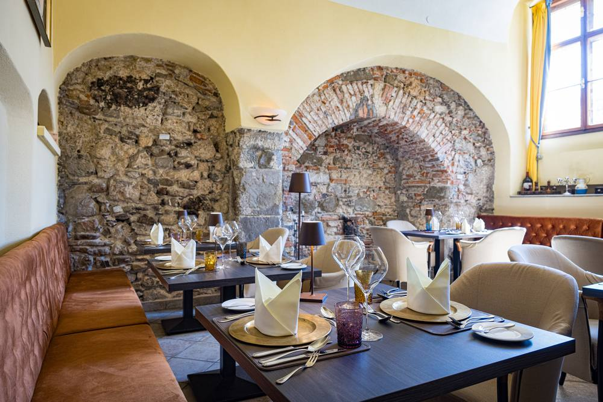
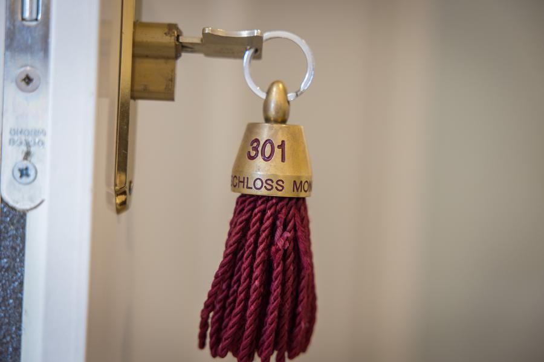
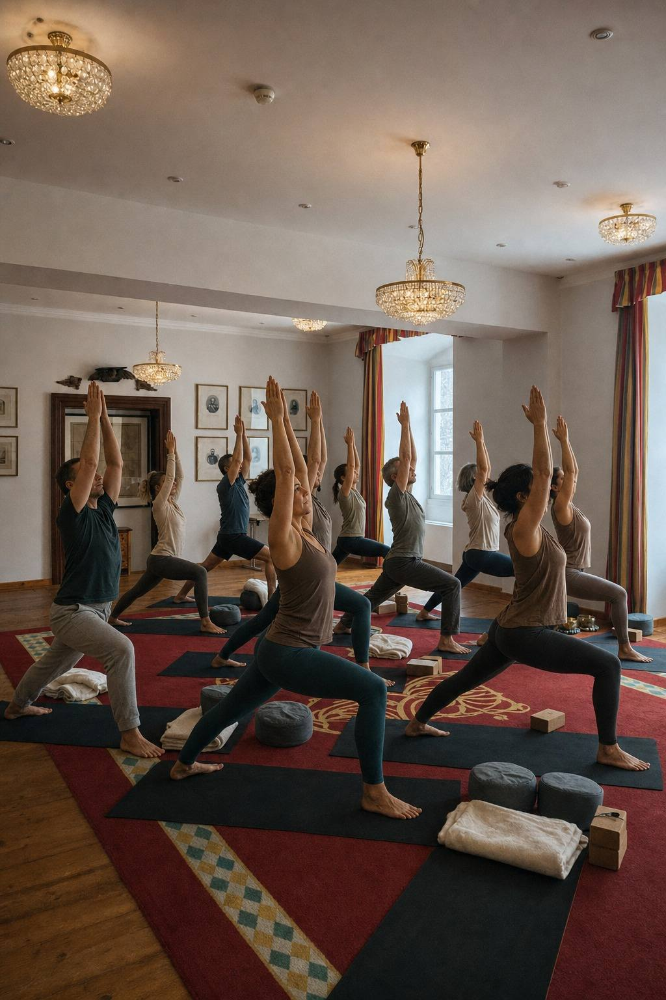
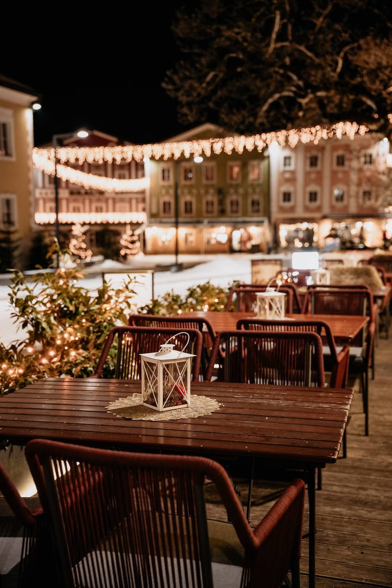
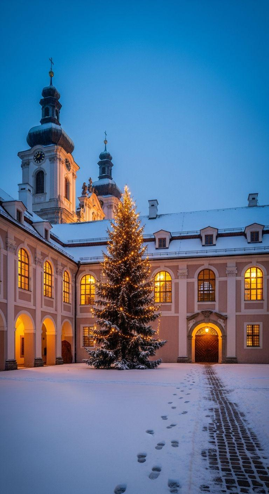
Plätze begrenzt
Sichert euch euren Platz
Schreibt uns einfach — wir melden uns persönlich mit allen Details zurück.
Oder ruft an: +49 151 14869903 · @stillandstrongyoga
Noch Fragen offen? Zu den häufigen Fragen